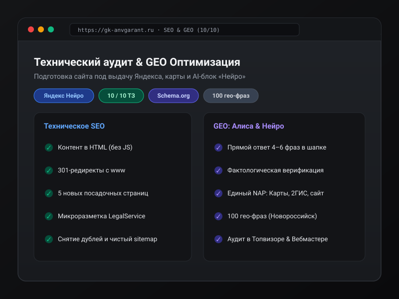

1. Контекст и исходный аудит сайта
Сайт gk-anvgarant.ru представляет группу компаний «АНВ Гарант» — агентство недвижимости и правового сопровождения сделок с филиалами в Новороссийске и Геленджике. Исходный срез сайта выявил системные проблемы, препятствующие как классическому ранжированию в Яндексе и Google, так и попаданию в ответы современных LLM-поисковиков (блок «Нейро» Яндекса, ответы голосового помощника Алисы):
- Скрытый контент (JS Client-Side Rendering): Без исполнения клиентских скриптов робот видел только одну карточку услуги («Юристы»). Остальные 4 направления и 11 ключевых ответов FAQ лежали внутри JS-кода и не индексировались первичным краулером.
- Дублирование зеркал: Домен
https://www.gk-anvgarant.ru/отвечал кодом 200 вместо 301-редиректа на канонический адрес без www, размывая ссылочный вес и вызывая канибализацию страниц. - Фактологические противоречия: На сайте утверждалось: «Компания основана в 2021 году и уже 5 лет помогает...», в то время как по данным ЕГРЮЛ организация зарегистрирована в 2025 году. Подобные нестыковки мгновенно отсекаются фактологическими фильтрами поисковых систем (E-E-A-T) и нейросетевыми суммаризаторами.
- Отсутствие посадочных страниц: Все ключевые услуги ютились на одном одностраничнике без ЧПУ, что не позволяло продвигаться по целевым транзакционным запросам.
2. Архитектура: Традиционное SEO vs Generative Engine Optimization (GEO)
В современной поисковой выдаче просто быть в органической десятке недостаточно: первое место занимает блок Директа, а над списком ссылок всё чаще разворачивается блок Яндекс Нейро или ответ Алисы. Для гарантированного присутствия бизнес должен оптимизироваться сразу в двух плоскостях:
3. Техническое ТЗ: 10 закрытых пунктов
Составил детальное инженерное ТЗ для разработчиков и лично провёл финальную валидацию через curl и инспекцию серверных заголовков:
-
Тексты услуг и FAQ в первом HTML: Полный перенос описания всех 5 услуг (Юристы, Сделки, Анализ коммерции, Продажа коммерции, Запуск агентства) и 11 развёрнутых ответов FAQ непосредственно в HTML-тело до выполнения скриптов.
-
Сквозной 301-редирект с www: Запросы с
www.gk-anvgarant.ruв один переход перенаправляются на основной адрес с сохранением всего URI и GET-параметров (?utm=...). -
Канонизация (Canonical): На главной прописан
<link rel="canonical" href="https://gk-anvgarant.ru/" />, а на каждой внутренней странице — собственный уникальный canonical со слэшем. -
Пять целевых посадочных страниц: Развёрнуты страницы
/yuristy/,/sdelki/,/analiz-kommercii/,/prodazha-kommercii/,/zapusk-agentstva/с индивидуальными Title, H1 и ценами «от». -
Чистая карта сайта (sitemap.xml): Содержит ровно 6 канонических адресов с корректным
lastmod, технические разделы исключены. -
Фактологическая чистота: Удалены некорректные исторические заявления, данные приведены в строгое соответствие с выпиской из ЕГРЮЛ.
-
Микроразметка Schema.org: Разметка
LegalServiceсодержит координаты офиса, фактический адрес, телефон, часы работы и диапазон цен. -
Локальная привязка (NAP): Единый адрес офиса (Новороссийск, ул. Исаева, 2Б) и рабочий номер +7 (989) 030-13-33 синхронизированы в коде и на картах.
-
Семантическое ядро (Топвизор): Собрано и кластеризовано 100 высокочастотных и среднечастотных коммерческих запросов с гео-привязкой к Новороссийску и Геленджику.
-
Аналитика и мониторинг: Настроены цели и счётчики Яндекс Метрики и подтверждены права в Яндекс Вебмастере.
4. Принципы GEO (Generative Engine Optimization)
Ключевое правило цитируемости в AI-выдаче:
Нейросеть (Яндекс Нейро, ChatGPT Search, Perplexity) цитирует те источники, где ответ на вопрос сформулирован плотно, фактологично и не требует домысливания или парсинга динамического JS-DOM.
Для гарантированного попадания в синтезированные ответы Алисы и Нейро были заложены следующие правила конструирования контента:
- Прямой ответ в шапке (Direct Answer): Первые 4–6 предложений каждой страницы услуги сразу отвечают на базовые вопросы: кто оказывает услугу, в каком городе, что конкретно входит в проверку, цена «от» и чего проверка юридически гарантировать не может.
- Вопросительные заголовки (Conversational H2/H3): Подзаголовки сформулированы так, как пользователи обращаются к голосовым ассистентам (например, «Как проверить юридическую чистоту квартиры перед покупкой в Новороссийске»).
- Сверка внешних источников: Алгоритмы Яндекса сопоставляют данные сайта с карточкой организации в Яндекс Картах и 2ГИС. Любое несовпадение телефона или адреса понижает доверие модели к источнику.
5. Итоги и верификация
Вся цепочка внедрения была проверена серией автоматических тестов через curl -I и рендер-валидаторы. Все 10 пунктов ТЗ подтверждены на живом домене с результатом 10 из 10. Сайт полностью подготовлен к индексации, устранены риски фильтрации за дубли контента, а структура страниц обеспечивает максимальную цитируемость в генеративной выдаче.